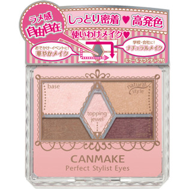

返回列表
产品名称：キャンメイク パーフェクトスタイリストアイズ １１ ローズベージュ

井田ラボラトリーズ キャンメイク パーフェクトスタイリストアイズ １１ ローズベージュ ＿
メーカー 井田ラボラトリーズ
JANコード 4901008308555
商品の特徴
しっとり密着高発色
使いわけメイク
おでかけ・イベントに！華やかメイク学校・会社に！ナチュラルメイク
ラメ感自由自在
成分・分量
【成分】
リンゴ酸ジイソステアリル、スクワラン、ブチルパラベン、メチルパラベン、トコフェロール、カルミン、シリカ、ステアリン酸亜鉛、タルク、マイカ、合成フルオロフロゴパイト、酸化スズ、酸化チタン、酸化鉄、水酸化Ａｌ
用法及び用量
【使用方法】
適量をチップ又はブラシにとり、まぶたに塗布する。